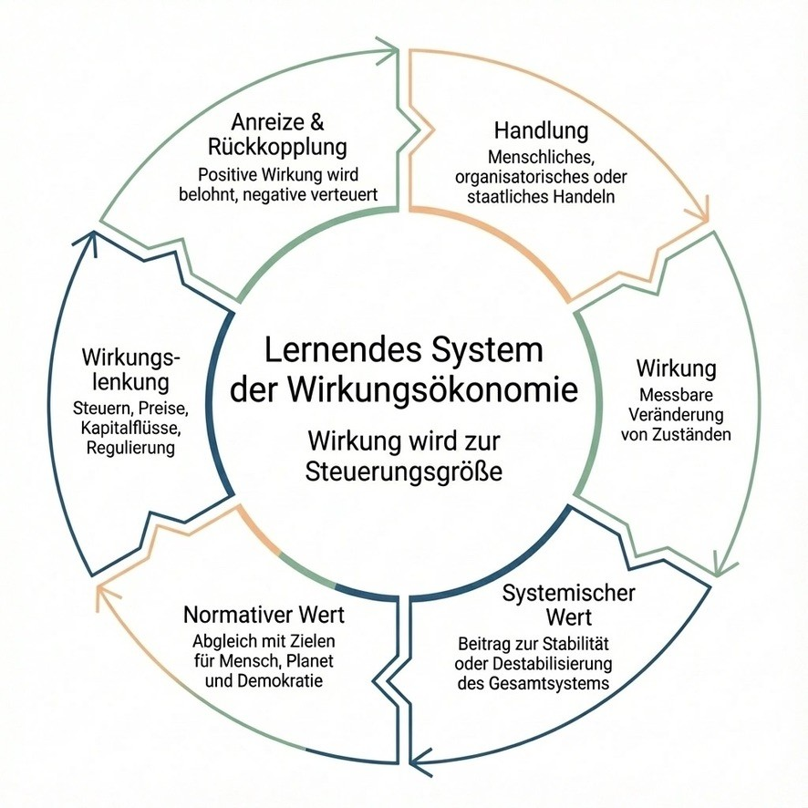

Die Wirkungsökonomie – ein lernendes System
Die Wirkungsökonomie ist ein Wirtschafts- und Gesellschaftsmodell, in dem nicht Geld, Wachstum oder Profit die zentrale Steuerungsgröße sind, sondern Wirkung.
Jede Handlung – von Individuen, Unternehmen oder dem Staat – entfaltet Wirkung. Diese Wirkung kann stabilisierend oder zerstörend sein: für Menschen, für den Planeten, für die Demokratie.
Die Wirkungsökonomie macht diese Wirkung sichtbar, messbar und steuerbar – und richtet Märkte, Steuern und öffentliche Systeme konsequent daran aus.
Im Zentrum steht ein lernender Kreislauf, der sich selbst korrigiert.

1. Handlung – jede Entscheidung zählt
Alles beginnt mit einer Handlung: Produzieren, investieren, konsumieren, regeln, kommunizieren, entscheiden.
Handlungen können individuell sein (Kaufentscheidungen, Arbeit, Medienbeiträge), organisatorisch (Unternehmensstrategien, Lieferketten, Produkte) oder staatlich (Gesetze, Förderungen, Infrastruktur, Sozialpolitik).
In der Wirkungsökonomie gilt: Jede Handlung hat Wirkung – und jede Wirkung ist relevant.
2. Wirkung – messbare Veränderung von Zuständen
Wirkung beschreibt, was sich real verändert, nicht was beabsichtigt war.
Zum Beispiel:
Steigt oder sinkt der CO₂-Ausstoß?
Verbessert oder verschlechtert sich Gesundheit?
Werden Menschen abgesichert oder belastet?
Stabilisiert oder untergräbt eine Handlung Vertrauen und Demokratie?
Diese Wirkungen sind messbar – über vorhandene Daten, Indikatoren und Standards (z. B. Umwelt-, Sozial-, Gesundheits-, Demokratie-Indikatoren).
Wichtig: Es geht nicht um Moral, sondern um reale Folgen.
3. Systemischer Wert – trägt es zur Stabilität bei?
Nicht jede Wirkung ist gleich relevant. Entscheidend ist der systemische Wert einer Handlung:
Trägt sie zur Stabilität des Gesamtsystems bei?
Oder verstärkt sie Krisen, Kosten, Spaltung, Krankheit, Zerstörung?
Ein Produkt, das billig ist, aber Gesundheit schädigt, oder ein Geschäftsmodell, das Gewinne erzeugt, aber Demokratie destabilisiert, hat einen negativen systemischen Wert – auch wenn es profitabel ist.
Die Wirkungsökonomie bewertet daher nicht isolierte Erfolge, sondern den Beitrag zum Ganzen.
4. Normativer Wert – Abgleich mit gemeinsamen Zielen
Wirkung wird nicht beliebig bewertet, sondern an gemeinsam vereinbarten Zielen gespiegelt (den SDGs und ihren Indikatoren).
Diese Ziele betreffen drei untrennbare Bereiche:
Mensch (Würde, Gesundheit, Teilhabe, Sicherheit)
Planet (Klimaschutz, Ressourcen, Biodiversität)
Demokratie (Vertrauen, Rechtsstaat, Zusammenhalt)
Sie bilden den normativen Rahmen der Wirkungsökonomie – international anschlussfähig, wissenschaftlich fundiert, demokratisch legitimiert.
So wird klar: Nicht alles, was Gewinn macht, ist wertvoll. Und nicht alles, was wertvoll ist, muss sich dem Markt unterordnen.
5. Wirkungslenkung – Steuern, Preise, Kapitalflüsse
Jetzt kommt der entscheidende Unterschied zum heutigen System.
In der Wirkungsökonomie wird Wirkung direkt zur Steuerungsgröße:
Preise spiegeln Wirkung wider → Schädliches wird teurer, Positives günstiger
Steuern orientieren sich an Wirkung statt an Kategorien, Umsatz oder Einkommen
Kapital fließt dorthin, wo positive Wirkung entsteht
Subventionen und Bürokratie werden überflüssig, weil der Markt selbst lernt
Der Markt bleibt bestehen – aber er konkurriert nicht mehr um maximale Ausbeutung, sondern um die beste Lösung für reale Probleme.
6. Anreize & Rückkopplung – das System lernt
Positive Wirkung wird belohnt. Negative Wirkung wird verteuert.
Nicht als Strafe, sondern als Rückmeldung.
Unternehmen, Organisationen und Individuen können sich jederzeit verbessern:
durch Innovation
durch bessere Prozesse
durch verantwortliche Entscheidungen
Das System reagiert dynamisch: Es passt sich an neue Erkenntnisse, Technologien und gesellschaftliche Ziele an.
So entsteht ein lernendes System, das sich selbst korrigiert – statt Krisen immer nur nachträglich zu reparieren.
Mehr als Markt: Wirkung in allen gesellschaftlichen Systemen
Die Wirkungsökonomie beschränkt sich nicht auf Produktpreise.
Sie steuert alle zentralen Systeme:
Gesundheit: Nicht Krankheit wird finanziert, sondern Gesundheit. Prävention, gute Lebensbedingungen und mentale Stabilität werden wirksam belohnt.
Rente & Soziales: Absicherung basiert nicht nur auf Einkommen oder Erwerbsbiografien, sondern auf dem gesellschaftlichen Beitrag zur Stabilität – über die gesamte Wirtschaft hinweg.
Wohnen: Bezahlbarer, klimafreundlicher Wohnraum wird günstiger, Spekulation und zerstörerische Modelle verlieren ihren Vorteil.
Staat & Demokratie: Öffentliche Mittel fließen dorthin, wo sie messbar Stabilität, Vertrauen und Zukunft sichern.
Finanzierung – ohne Mehrbelastung
Die Wirkungsökonomie ist haushaltsneutral: Es geht nicht um höhere Steuern, sondern um andere Verteilung.
Was heute an Folgekosten explodiert (Klimaschäden, Gesundheitskosten, soziale Krisen), wird im System vorher sichtbar und steuernd berücksichtigt.
Das spart Geld, Zeit und gesellschaftliche Reibung.
Die Grundidee in einem Satz
Nicht Geld steuert die Welt – sondern Wirkung. Und wer Wirkung richtig misst, kann Freiheit, Wohlstand und Stabilität miteinander versöhnen.